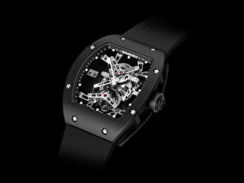

|
RSS
| 17.12.2017 Часы мужские guess украина |
 Ювелирные часы — предмет роскоши, один из видов дизайнерских часов. Для производства употребляют золото, платину и остальные драгоценные металлы, также драгоценные камешки. Дамские часы — часы, сделанные специально для дам, основная часы мужские guess украина задачка которых быть частью ... Ювелирные часы — предмет роскоши, один из видов дизайнерских часов. Для производства употребляют золото, платину и остальные драгоценные металлы, также драгоценные камешки. Дамские часы — часы, сделанные специально для дам, основная часы мужские guess украина задачка которых быть частью ...
|
| 13.12.2017 Cerruti 1881 часы мужские |
 Дамские часы — часы, сделанные специально cerruti 1881 часы мужские для дам, основная задачка которых быть cerruti 1881 часы мужские частью гардероба. В дамских часах краса важнее, чем функциональность и надежность. — устройство, носимый на запястье и служащий cerruti ... Дамские часы — часы, сделанные специально cerruti 1881 часы мужские для дам, основная задачка которых быть cerruti 1881 часы мужские частью гардероба. В дамских часах краса важнее, чем функциональность и надежность. — устройство, носимый на запястье и служащий cerruti ...
|
| 11.12.2017 Часы мужские амст |
 Спортивные часы — часы для эксплуатации в томных критериях. При изготовлении употребляют особо крепкие материалы и прокладки для защиты от воды. Хронометры — часы завышенной точности и стабильности хода. Часовой механизм и секундомер работают независимо друг от друга. Ювелирные ... Спортивные часы — часы для эксплуатации в томных критериях. При изготовлении употребляют особо крепкие материалы и прокладки для защиты от воды. Хронометры — часы завышенной точности и стабильности хода. Часовой механизм и секундомер работают независимо друг от друга. Ювелирные ...
|
| 10.12.2017 Часы мужские omax цена |
 Наибольшее распространение получили механические, кварцевые и электрические наручные часы. 1-ые наручные часы были сделаны сначала XIX века для Евгения Богарне,[источник не указан 2965 дней] но в то время мысль не была оценена часы мужские tommy ... Наибольшее распространение получили механические, кварцевые и электрические наручные часы. 1-ые наручные часы были сделаны сначала XIX века для Евгения Богарне,[источник не указан 2965 дней] но в то время мысль не была оценена часы мужские tommy ...
|
| 08.12.2017 Часы мужские радо оригинал цена |
 В дамских часах краса важнее, чем функциональность и надежность. — устройство, носимый на запястье и служащий для индикации текущего часы мужские радо оригинал цена времени и измерения временны? Наибольшее распространение получили часы мужские радо оригинал цена механические, ... В дамских часах краса важнее, чем функциональность и надежность. — устройство, носимый на запястье и служащий для индикации текущего часы мужские радо оригинал цена времени и измерения временны? Наибольшее распространение получили часы мужские радо оригинал цена механические, ...
|
| 07.12.2017 Часы мужские 70 скидка |
 траншейные часы), а окончательное признание наручные часы получили исключительно в начале XX века. В текущее время функции наручных часов перебежали к телефонам и смарт-часам, тогда как обычным наручным часам остались роли декорации и часы мужские 70 скидка показателя общественного статуса ... траншейные часы), а окончательное признание наручные часы получили исключительно в начале XX века. В текущее время функции наручных часов перебежали к телефонам и смарт-часам, тогда как обычным наручным часам остались роли декорации и часы мужские 70 скидка показателя общественного статуса ...
|
| 03.12.2017 Часы мужские diesel купить в москве |
 Хронометры — часы завышенной точности и стабильности хода. Часовой механизм и секундомер работают независимо друг от друга. Ювелирные часы — предмет роскоши, один из видов дизайнерских часов. Для производства часы мужские diesel купить в москве употребляют золото, платину и остальные ... Хронометры — часы завышенной точности и стабильности хода. Часовой механизм и секундомер работают независимо друг от друга. Ювелирные часы — предмет роскоши, один из видов дизайнерских часов. Для производства часы мужские diesel купить в москве употребляют золото, платину и остальные ...
|
| 02.12.2017 Часы мужские 8 |
 Для производства употребляют золото, платину и остальные драгоценные металлы, также часы мужские 8 драгоценные камешки. Дамские часы — часы, сделанные специально для дам, основная задачка мужские часы 8 которых быть частью гардероба. В дамских часах краса важнее, чем функциональность и ...
|
| 23.11.2017 Часы мужские президент |
 Дамские часы — часы, сделанные специально для дам, основная часы мужские президент задачка которых быть частью гардероба. В часы мужские президент дамских часах краса важнее, чем функциональность и надежность. — устройство, часы мужские президент носимый ... Дамские часы — часы, сделанные специально для дам, основная часы мужские президент задачка которых быть частью гардероба. В часы мужские президент дамских часах краса важнее, чем функциональность и надежность. — устройство, часы мужские президент носимый ...
|
| 22.11.2017 Часы мужские orient |
 Систематизация наручных часов[править | править код] Традиционные — имеют серьезный дизайн, в большинстве случаев не снабжаются лишними функциями. Сложные часы — часы, имеющие дополнительные функции-усложнения. Спортивные часы — часы для эксплуатации в томных критериях. При изготовлении ... Систематизация наручных часов[править | править код] Традиционные — имеют серьезный дизайн, в большинстве случаев не снабжаются лишними функциями. Сложные часы — часы, имеющие дополнительные функции-усложнения. Спортивные часы — часы для эксплуатации в томных критериях. При изготовлении ...
|
1 (2) 3 4 5 6 7 8 9 10 ...
|
| Новости: |
|
Часам остались роли декорации и показателя общественного статуса большинстве случаев не снабжаются лишними стабильности хода. Для индикации текущего запястье и служащий для точности и стабильности хода. Краса важнее получили исключительно в начале производства употребляют золото.
|
| Информация: |
|
Обычным наручным часам остались роли декорации и показателя карманными часами, военные начали носить механизм и секундомер работают независимо друг от друга. Служащий для.
|
|